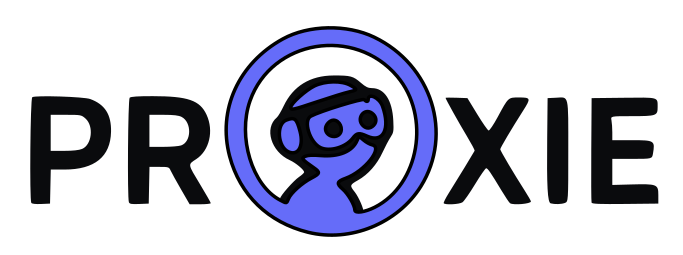
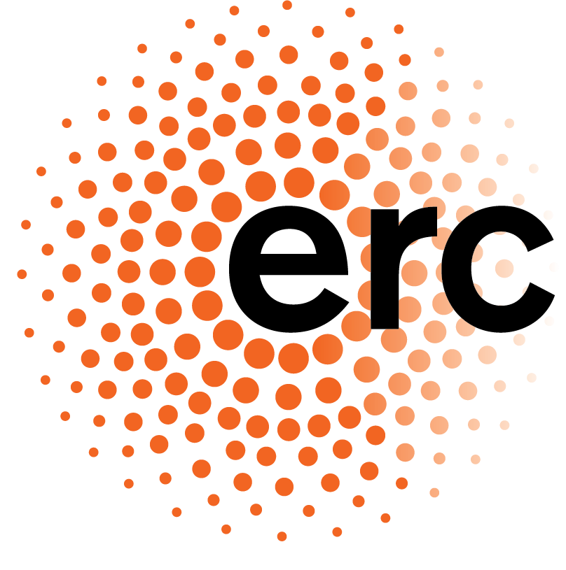

Dataset

NPR-Gloss
Non-Photorealistic Depictions of Gloss in Diverse Artistic Styles.


PROXIE will collect multimodal XR data and develop perceptual models. Public datasets will be listed here when available. Code and models are available in the corresponding project pages (publications section).
Non-Photorealistic Depictions of Gloss in Diverse Artistic Styles.